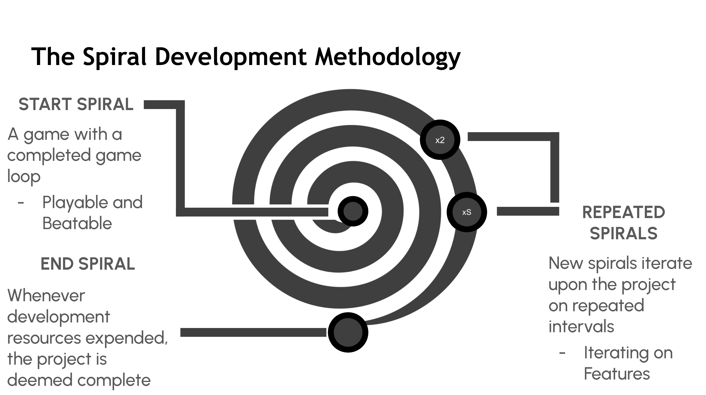
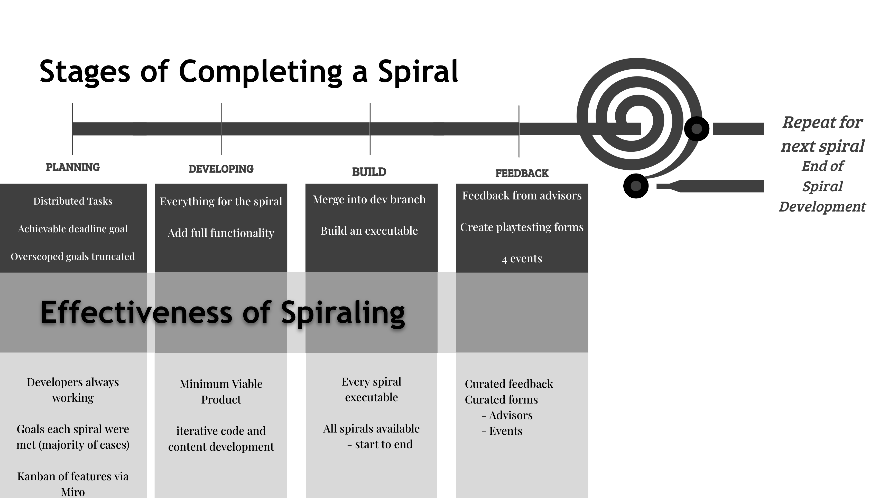
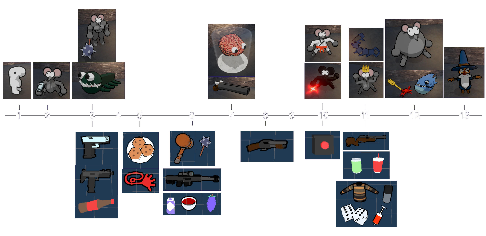
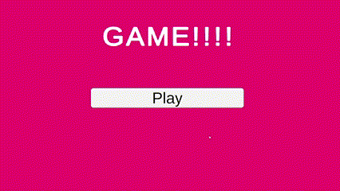
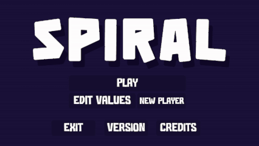
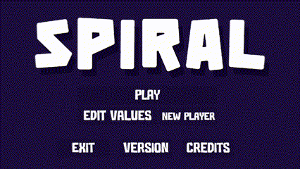

Project Type:
Engine:
Language:
Other Tools:
Team Size:
Role:
Duration:
Awards:
Game Development
Unity
C#
Github
5
Developer
9 months
Presented @ PAX East
Spiral is a boss-rush, bullet-hell, rogue-like game created as to further research a project management methodology--the Spiral Methodology.
Project Spiral follows an extermination job gone awry after a wizard's spell transforms a small creature into a progressively stronger foe.
Each time the boss is defeated, it transforms, challenging the player further.
Gameplay consists of a series of boss fights.
After each victory, players can build their character by either refilling health or selecting a new item.
Items can replace primary or secondary attacks or offer passive effects, encouraging diverse playstyles based on item combinations.
The spiral methodology is a project management methodology that focuses on creating in feature-complete iterations.
In the case of game development, that meant a completeable game as defined as playable from start to finish.
Project Spiral was created as research on the Spiral Methodology. As such, on a weekly or bi-weekly basis a version of the game would be built, have the requirement to be playable from beginning to end, and would receive feedback from our advisors/industry veterans.
The Spiral Methodology is an iterative project management framework—akin to Agile or Scrum—that prioritizes feature-complete, vertically sliced builds at regular intervals.
Each "spiral" delivers a technically cohesive game instance with closed gameplay loops, fully playable from start to finish.
Below demonstrates the dual-layer implementation: the macro development cycle (left) showing progressive scope expansion from MVP to shippable product, and the micro execution workflow (right) that ensured 15 consecutive playable builds through disciplined bi-weekly cycles.


Scope Control: Every iteration expands scope incrementally while preserving end-to-end playability, ensuring the product remains shippable at all stages.
Risk Mitigation: By enforcing vertical integration (core mechanics, art, and systems working together), technical debt is minimized, and scope creep is contained.
Feedback-Driven: Bi-weekly builds undergo structured review by advisors, with insights directly informing the next spiral’s priorities. Bi-monthly builds underwent player feedback through gaming events hosted by several universities.
Continuous Productivity: By resetting development to a feature-complete starting build/codebase at each spiral’s beginning, the team eliminated dependency wait states that typically stall progress.
This approach enabled developers to work concurrently on isolated features without blocking upstream changes, as every contributor worked from the same complete foundation.
Supported by GitHub’s branching strategy and Miro Kanban tracking, this method maintained uninterrupted workflow across all 15 spirals, even during complex integrations like boss order management or prodedural animation.
The result was sustained team productivity with zero idle time, directly attributable to the spiral structure’s enforced reset to a playable baseline before each iteration.
Spiraling allowed us to create new bosses and items consistently and quickly. Effectvely building upon a core game loop while improving and adding new content and systems.


Minimum Viable Product
Completed Loop: A menu to begin gameplay, a gameplay scene to engage in and win, and a win state/screen upon completion.
Juice: Emphasis on making defeating an enemy feel good using screenshake, hit jiggle, hit stop, and bullet time.

First Bosses, Player Health, and Damage Numbers
Completed gamestates: Both win state and lose state are possible with addition of player damage/death.
More juice: Damage numbers show how much damage is being dealt.

Switched from 2D -> 3D
Added Items
Procedural Animation
Fully implemented custom IK system for code-driven limb positioning—handling all player/item interactions and legged boss movement without traditional animation pipelines.
Final version
Total content in game at end spiral:
- 13 bosses
- 20 items
With our team consisting solely of 4 programmers and 1 audio specialist (no dedicated artists), I introduced and fully implemented a procedural animation system to overcome our art production limitations. This code-driven solution eliminated our dependency on traditional keyframe animation, allowing us to develop player and enemy movements using only base 3D models without requiring rigs or artist-created animations.
The system uses a custom Inverse Kinematics (IK) structure that dynamically calculates limb positions through three key points per limb—shoulder, elbow, and hand for arms, or thigh, knee, and foot for legs. Arms automatically adjust stance and item-holding positions based on player input, while a dedicated LegStepper script calculates foot placement based on character movement, ensuring dynamic motion.
This implementation directly enabled our two-phase boss development process: first creating mechanically complete bosses using placeholder geometry or 2D sprites to validate gameplay loops within each spiral, then visually completing them in subsequent iterations using kitbashed internet-sourced 3D models or capsule/sphere constructions—all animated entirely through code. By eliminating artist dependency for movement systems, we maintained uninterrupted bi-weekly delivery of vertically integrated builds across all 15 spirals, where all models despite their source achieved visual cohesion through procedural animation and cel-shading. This approach transformed our programmer-only team composition into a strategic advantage, ensuring every spiral remained shippable while progressively refining both mechanics and aesthetics.